Södermalm i tid och rum
Nordvästra KatarinaPeter Myndes Backe , Mariagränd, Klevgränd, Urvädersgränd, Hökens gata, Svartensgatan, Mosebacke Ek, Stockholms gatuskyltar berätta, 1933 Upp till Mosebacke - Först i början av 1500-talet tycks gränden i Gamla sta'n fått namnet Uhrwädersgränd - efter Nils Månsson Uhrwäder - efter att förut hetat Stenbadstugränd, ett namn som den på sista åren återfått för undvikande av dubbelnamn. Gränden på Söder fick säkerligen ej sitt namn förrän i slutet av 1600-talet efter en Simon Uhrwäder, som var husägare i mitten på samma århundrade i kvarteret Urvädersklippan, och mest troligt är att kvartersnamnet tillkommit först och grändens namn senare. Ännu under större delen av 1600-talet kallades den öppna platsen däruppe på bergplatån för Fiskarberget, senare Fiskaretorget och en tid Hökensberg. På 1700-talet kallades platsen Moseberg och först långt fram på 1800-talet fick platsen sitt nuvarande namn. Namnet anses härleda sig efter en Anders Jönsson Moses, som på 1600-talet här ägde en tomt och i
|
I mitten av 1700-talet nämnes emellertid kvarnen Hökan,
som låg "alldeles vid Fiskaretorget" och högst sannolikt
är detsamma Mose kvarn, eller åtminstone en efterföljare,
som nu fått detta namn efter ägaren, "väderkvarnsmjölnaren" Johan Hansson Höök. Efter denne Höök och kvarnen Hökan har givetvis Hökens Gata fått sitt namn.
Den tredje gatan upp till Mosebacke är Svartensgatan och att här föreligger ett personnamn är otvivelaktigt, men vilken den person varit som givit gatan dess namn är däremot högst ovisst. Man har nämligen flera att välja på, som här ägt gård och grund: borgmästaren Olof Swart på 1530-talet, en Isak Swart på 1650-talet, bokhållaren Erik Svart och kyrkobetjänten Johan Schwart på 1670-talet. |
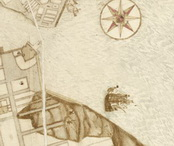 Hökens och Mosis kvarnar 1645 |
{kind=link}
|
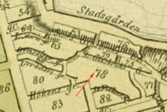 |
Trakten däruppe på bergplatån var under 1600- och 1700-talen mycket litet bebyggd. År 1773 hade en kapten Grund blivit ägare av den stora tomten på bergskrönet mellan Stora Glasbruksgatan och Fiskaregränden och uppbyggde här ett anspråkslöst trähus. Några år senare förvärvades stället av dåvarande assessorn i Collegium medicum, sedermera professorn och kungl. arkiatern (livmedicus) David von Schulzenheim, som nedlade stora kostnader på terrasserings- och trädgårdsanläggningar. Några år därefter - 1784 - förvärvades huset och tomten av en herre vid namn Peter Fogelmarck, som omändrade stället till värdshus och förlustelseställe. |
{kind=link}
Mosebacke var därmed inrangerat bland Bacchitemplen och innehades sedan av flera ägare, vilka var och en förbättrade och förskönade stället, som började alltmer besökas ej blott för den vackra utsikten utan även för det goda köket. I början av 1800-talet kom Mosebacke i hovkällarmästaren Lundmarkers ägo, som ej tycks ha skytt några kostnader för att ytterligare försköna stället. Vid denna tid började även en liten blåsorkester att på lördagar och söndagar locka folk dit, och ibland uppträdde även en konstmakare i trädgården. Men 1850 var det slut på det riktigt gamla Mosebacke.
En ny tid inleddes detta år, genom att den bekante fröjdpappan och folkförlustaren handlanden C. A. Wallman, som inköpt stället, helt omdanade detsamma. En stor öppen danspaviljong uppfördes samt en täckt sommarteater, vidare en karusell, en hjulgunga, ett par musikläktare, en skjutbana, en schweizeribyggnad med veranda o. s. v. Den 16 augusti 1850 var en stor dag för stockholmarna, ty då öppnades det till Tivoli förvandlade gamla Mosebacke. Inträdesavgiften var 8 sk. banco, och för detta fick man höra konserter av någon av stockholmsgardenas musikkårer, åse en "ascension" (uppstigande) på lina och senare på aftonen - åtminstone de större festaftnarna - åse ett fyrverkeri. På teatern gåvos pantomimer med eller utan balett, men här betalades inträdet särskilt, liksom till balen i danspaviljongen och de andra favoritfåfängligheterna. Stockholmarna trivdes bra, och ett glatt och muntert folkliv härskade nu många år på Mosebacke, som tycktes ha blivit en verklig förlustelseort för alla samhällsklasser.
|
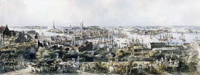 Panorama från Mosebacke 1790. Förskönande "teaterutsikt" från Mosebacke med högreståndspublik. Akvarellerad etsning av Johan Fredrik Martin efter en teckning av brodern Elias Martin, omkring 1790. |
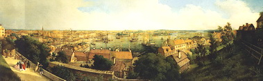 1842. Ferdinand Tollins utsikt från Mosebacke, akvarellerad tuschteckning från 1842-1843. Till förlagan använde Tollin tidiga fotografier av typ daguerrotypi, som ej finns kvar längre. |
{kind=link}
{kind=link}
| År 1852 skattade det gamla värdshuset med sin lilla källarsal åt förgängelsen, och grunden lades till Södra teaterhuset. Första gången detta Thalias tempel öppnades för allmänheten var den 20 november 1853 med ett teatersällskap under J. W. Weselius och kallades då Nya Teatern på Mosebacke, men snart endast Södra teatern. Denna nedbrann dock fyra år senare genom en vådeld, som hade börjat i en liten träkåk vid Hökens Gata, varifrån elden spred sig och ödelade förutom teaterhuset även ett 20-tal andra egendomar. Efter ett par år stod dock ett nytt ännu ståtligare konsttempel - det nuvarande - på det nedbrunnas plats och invigdes den i december 1859 av det Zetterholmska sällskapet. Det har sedan under växlande öden och under olika överstepräster sörjt för stockholmarnas gamla klockarkärlek: operetter, revyer och folklustspel. |
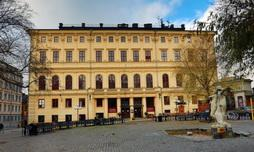 |
|
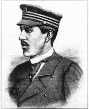 |
På Mosebacke frodades folk- och tivolilivet under
många år med allehanda nya dragnummer. Under 1880- och
90-talen företogos på somrarna nästan varje kväll ballonguppstigningar bl. a. av den bekante kapten Rolla, som
endast använde sig av en trapets i stället för korg, men som
också med livet fick plikta för sin djärvhet. Victor Rolla föddes 1870 i Minsk. Han var luftseglare och uppträdde under namnet Kapten Rolla. Konsten bestod i att stiga upp med en gasfylld luftballong, för att sedan kliva över i en fallskärm och singla ner till marken. Under föreställningarna var han klädd i sin mörkblå luftseglarkostym med skärmmössa och på fötterna hade han näbbstövlar för att lättare kunna kroka i fallskärmens träring. Paviljongen inreddes till variéte, men dess glansdagar liksom det glada livet uppe på terrassen slutade då nykterhetsvännerna lyckades sätta bommar och lås litet varstans i vingårdarna. Restauranglivets "gyllene" dagar äro förbi och de glada bacchibrödernas punsch- och toddylag äro blott en saga, men "då sommarkvällens skymning breder sig över Mälardrottningen, älska fortfarande hennes trogna beundrare - de gamla genuina stockholmarna - att från Mosebacke-terrassen se ut över sin minnesrika, tjusande sköna och sällsynt måleriska stad, där de trälat och arbetat, latat och roat sig, skrattat och gråtit, bannat och jublat". |
***************************'
"Blåkulla" har antagits vara en slags försvenskning eller förvrängning av det tyska Blocksberg, häxornas samlingsplats då de firade sina stora fester under skärtorsdags- och valpurgisnätterna. Flera ställen i Sverige ha betecknats med benämningen Blåkulla, men ryktbarast är väl ön jungfrun i Kalmarsund. Utom till Blåkulla förlägges i Sverige liksom i Danmark häxornas mötesplats även till Häckelfjäll på Island.
Men dessutom hade alla gamla städer sitt speciella Blåkulla och liksom i alla gamla städer ha också trolldom och skrock frodats starkt i Stockholm. Framför allt har det hört hemma utanför den egentliga staden, på malmarna som varken voro land eller stad. Kan man nu utpeka någon bestämd plats i stadens grannskap, där Blåkullaresorna hade sitt mål? Uppgifterna härom äro visserligen ganska osäkra, men högst troligt är likväl att de båda kvartersnamnen Häckelfjäll på Söder och Trollhättan på Norr äro minnen från den tid då Blåkullafärderna troddes vara verklighet.
| I de gamla kåkarna på sluttningen av Moseberg vid Svartens-, Hökens-, Roddare-, Tjärhovs- och Bondegatorna fanns en del "käringar" som troddes ha en hel del fuffens för sig och som troddes stå "den elake" ganska nära! Under de första åren på 1670-talet hade i Dalarna börjat en trolldomsepidemi, som sedan spred sig över hela landet för att kulminera i de stora häxprocesserna i Stockholm år 1676. Det hade varit svår pest, missväxt och torka det året, brunnarna - t. o. m. den utmärkta brunnen i Brunnsbacken vid Södermalmstorg - hade sinat och till detta ansågs trollpackorna ha skulden. Uppdagandet av detta hade väckt det största uppseende bland folket på Södermalm, som vände sig till presidenten i Svea hovrätt med krav på att han skulle ta itu med "detta satans an- hang". Presidenten Bengt Horn måste böja sig för den allmänna opinionen - d. v. s. kvinnorna och prästerna - och anbefallde förhör och åtal mot de utpekade häxorna och därmed började den fruktansvärda process, som slutade med att sex dömdes till döden och avrättades. |
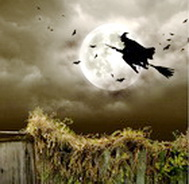 |
Under 1600- och 1700-talen fanns i Stockholm - liksom i hela landet - ett talrikt kvinnoproletariat, som vållade myndigheterna svåra bekymmer. Det var de eviga krigen som åstadkommit detta överskott av kvinnor, som sökte sin nödtorftiga bärgning som månglerskor av alla slag. Men dessutom talas om fiskeblöterskor, syltekvinnor, mjölkekäringar och "rännarekäringar", de sistnämnda tydligen sådana, som skötte de sysslor som nu handhavas av springpojkar och stadsbud. Bland denna krets av fattiga och obildade kvinnor, som i stort antal bodde i de gamla kåkarna vid Moseberg sökte man de skyldiga till trolldomsväsendet och särskilt illa ansedda voro roddarmadammerna på grund av deras högst okristliga utförsgåvor, okvädinsord och stridslystnad.
Den domstol, som på grund av den lokala utbredningen av trolldomsväsendet närmast hade att taga hand om saken var kämnärsrätten på Söder, som var inrymd i det då vid Södermalmstorg uppförda nya Stadshuset, vars existensberättigande de senaste åren varit så omtvistat. Till kämnärsrättens heder och berömmelse kan sägas att den gentemot de överordnade myndigheterna och prästerna ställde sig förvånansvärt fördomsfri i sitt bedömande av de arma människornas förvillelser.
|
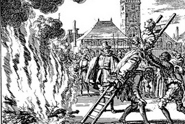 |
De som drevo sitt spel - av vinningslystnad, av hämnd, av fåfänga, av avundsjuka eller fanatism och okunnighet - opererade vanligen med barn som vittnen. I angivarnas sjukliga föreställning ingick nämligen att trollpackorna togo barnen med sig till Blåkulla. Dessa barn suggererades att utpeka de platser dit de förts och beskriva de trollpackor som fört dem till Blåkulla eller som de där träffat, vilka de äldre lätt och lekande kunde identifiera med på förhand misstänkta och utpekade i den närmaste omgivningen. Barnen blevo de viktigaste vittnena i trolldomsprocesserna och till att börja med litade man blint på deras lösa prat. På detta sätt fingo de många liv på sina relativt oskyldiga samveten. |
{kind=link}
Vanligen beskrevo dessa barn någon plats i den närmaste omgivningen eller något ställe som de från någon
utfärd kände igen såsom målet för dessa Blåkullafärder.
Vid Katarina kyrka gjordes vanligen ett kort uppehåll för
att stjäla litet klockmalm - den underjordiske potentaten
satte nämligen stort värde härpå - varefter färden fortsattes. Bland de platser som vanligen uppgåvos som samlingsplats voro Stadsträdgården vid Skanstull, Beijerska
trädgården vid Fatbursjön, Gyllenhammars tomt vid
branten av Stadsgårdsbergen ävensom Fiskartorget vid Slussen. Ibland uppgavs även Karlberg och Ulriksdal. En mycket vanlig samlingsplats var emellertid krönet däruppe på
berget d. v. s. nuvarande kvarteret Häckelfjäll mellan Högbergs-, Svartens- och Roddargatorna. Gatu- och kvartersnamnsakkunnige hade sålunda ett mycket starkt skäl för
detta namnval.
Peter Myndes backe
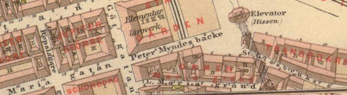
Ur Stockholms gatunamn
Namnet Peter Myndes Backe avsåg från början endast den gatudel, som låg öster om Götgatan. Genomnamnändringar 1937 och 1971 har det fatt sin nuvarande giltighet.
Gatan har namn efter holländaren Peter Mynder (död 1698), som i början av 1690-talet här anlade ett tobaksspinneri. De av allt att döma äldsta beläggen för namnet Peter Myndes Backe finns i Henels Stockholmsbeskrivning från 1728 (Petter Mynders-Backe, Mynders Backe, Mynders-Backe).
År 1765 omtalas gatansåsom den »så kallad[e] Petter mynders backe». I Vägvisaren i Hufvudstaden (1844) sägs, att »Petter Myndesbacke ... är egentligen en fortsättning af Marieg[atan], hvilken den förenar med Stadsgården och St.Glasbruksg[atan]».
I en källa från 1649 talas om en tomt, som ligger mellan »Sanctae Mariae och Martae grender». En liknandeuppgift föreligger 1662, då ett hus säges ligga »emellan S:t Mariae och Martae gatun». Då »S:t Martae gatun» ärett äldre namn på nuvarande Mariagränden, visar dessa belägg, att den del av nuvarande PeterMyndes Backe som ligger öster om Götgatan haft samma namn som gatan väster därom; från omkring 1830hette den senare Mariagatan, men i äldre tid möter varierande namnformer: »Sanctae Mariae gathon» 1645,»Marie grändh» 1646 , »Sanctae Mariae gränden» 1648, »Mariae gatun» 1666, »S:ta Mariae gatu» 1669, »S:tMariae kyrkiogatun» 1674, »Stor[a] Marie gr[änden]» 1819. Det låter sig inte avgöras, hur länge de bådagatudelarna hade samma namn, men sannolikt har de haft det intill dess Peter Myndes Backe blev ett fastetablerat namn på den östra delen. I Holms tomtbok 1674 förekommer namnet »Stadzhus gatan», men dettycks vara en rent tillfällig namnbildning med anknytning till det nyuppförda stadshuset, nuvarandeStadsmuseet.
När Södergatan byggdes, delades Mariagatan i två från varandra skilda delar, av vilka den östra år 1937 räknades in i Peter Myndes Backe, medan den västra fick behålla namnet Mariagatan intill dess det utgick 1955.
|
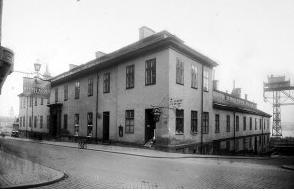 Götgatan 1, Peter Myndes Backe. Stadshuset - från sydväst |
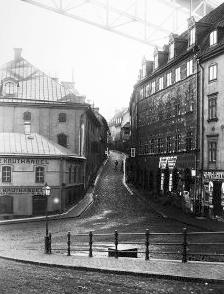 Stora Glasbruksgatan österut från Peter Myndes Backe. 1896 |
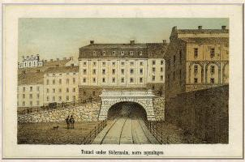 Tunnel under Södermalm. Glasbruksgatan 2-4, Peter Myndes Backe 3. Sammanbindningsbanan mellan Norra och Södra station. Den södra stadshusflygeln till höger. 1870. |
|
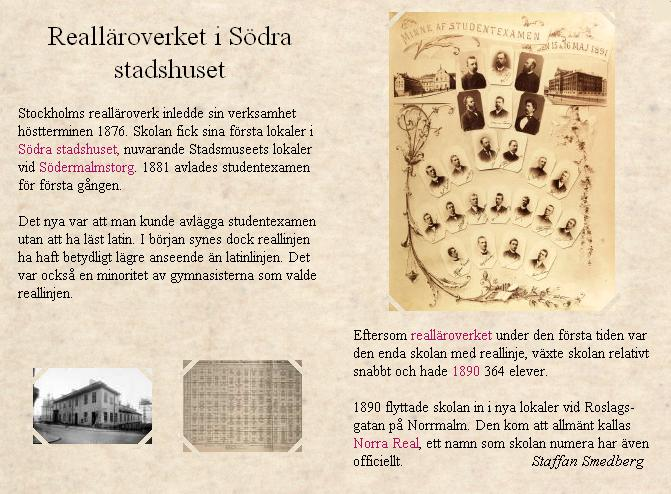
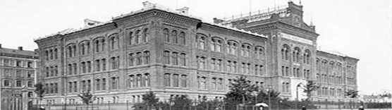 Norra Real |
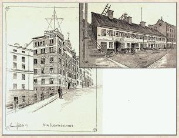
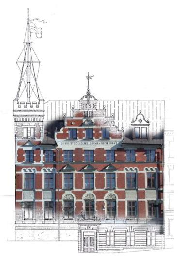 |
Nya Sjömanshemmet vid Peter Myndes Backe 3. 1891 Fd Sjömanshemmet är byggt under 1650-talet. Två tunnlar har byggts under huset, en järnvägstunnel byggdes under 1860-talet och en tunnelbanetunnel under 1950-talet. Vid byggandet av tunnelbanestationen Slussen i mitten på 1950-talet revs västra delens halva bottenvåning. I övrigt har byggnaden i stort sett den utformning den fick vid ombyggnaden 1891. Byggnaden med sin röda tegelfasad och fasadtext "1891 Stockholms Sjömanshem 1964" samt ett krenelerade hörntorn med en fartygsmast på toppen är ett välkänt inslag i Stockholms stadsbild. |
|
Även i detta fall är det med all säkerhet Mariagränden, som har gett anledning till namnet; man har associerat till Bibelns systerpar Maria och Marta (Lukas 10: 38-42). Att det i själva verket var en annan Maria som har gett kyrkan och därmed också indirekt gatan deras namn har tydligen inte utgjort något hinder. Kyrkans namn är ju Maria Magdalena.Tillägget Magdalena visar att det inte är Jesu moder som avses utan Maria från Magdala även kallad Maria Magdalena, en av många Mariagestalter i bibeln. Hon var närvarande vid korsfästelsen tillsammans med Jesu moder och ytterligare en Maria och hon hade botats av Jesus från besatthet.
|
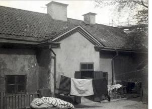 Mariagränd 3. 1923. |
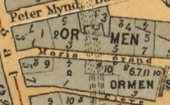 Karta från 1899 |
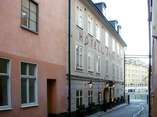 Mot öster. Hotell 1674 längst bort. |
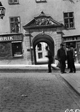 Västerut mot Ebba Brahes palats på Götgatan 16. |
{kind=link}
|
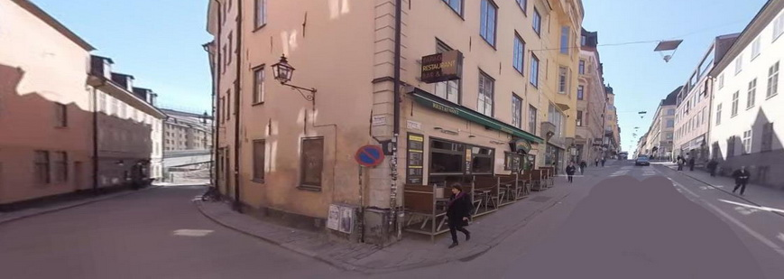 Götgatan från norr söderut. Mariagränd in till vänster. |
|
I varje fall sedan 1690-talet har gränden också kallats Ormsaltargränden (Ormsaltare gränden 1694). En uppgift från 1696 bör sannolikt tolkas så att detta var en mera folklig, skämtsam benämning på gränden. Denna omtalas nämligen såsom »Klefwe- eller vulgo Ormsaltare gränden». Samma namn, »Ormsaltar gr[änden]», har Tillaeus på sinkarta 1733 medan Rüdling 1740 har »Ormsaltare- eller Cleve-Gränden». I en annons i Dagligt Allehanda 1777 förekommer samma dubbelnamn: »Ormsaltare- eller Klewegränden». I Fredmans Epistel n:o 53 sjunger Bellmanom honom »Som nyss annamma/ Slangen och Pannan i Ormsaltargränd»/. Namnet Ormsaltargränd förekommer ännu under första hälften av 1800-talet för att senare försvinna till förmån för Klevgränd. Det har framställts olika förslag till tolkning av förleden Ormsaltare-, men med all säkerhet är det fråga om samma ord som det i svenska dialekter förekommande ordet ormsaltare med betydelsen 'illmarig, listig människa'.Ordet är belagt i litteraturen sedan 1640-talet. En liknande ordbildning med samma nedsättande innebörd är det i äldre stockholmska förekommande krabbsaltare. Gränden hade uppenbarligen inte det bästa rykte. Nils Afzelius citerar ett fingerat brev från 1773, som handlar om den nyöppnade operan och inledningspjäsen Thetis och Pelee; en åhörare säges där vara »närmare danad för en Muff-Dans i Ormsaltare-Gränd, än at åskåda Thetis Biläger». Man kan kanske inte helt utesluta möjligheten, att valet av grändens »öknamn» haft något samband med kvartersnamnet Ormen, belagt 1650, och med det faktum att det bott saltmätare vid gränden; "Lars Anderssons altmätares gårdstomt" omtalas 1651.Östra delen av Klevgränd hette intill 1969 Lilla Glasbruksgatan.
|
|
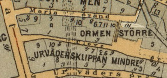 Karta. |
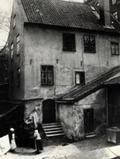 Klevgränd 3 1923. |
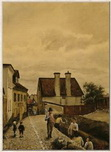 Klevgränd 6-8. Akvarell, Per Röding, 1884. Från öster. |
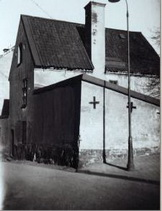 Klevgränd 3B, |
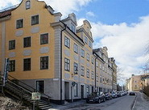 Klevgränd/Katarina kyrkbacke mot väster |
{kind=link}
|
Urvädersgränd (Urewäders grendhen, Urewärs grenden 1646) och kvarteret Urvädersklippan (Mindre och Större)(Uhrewärs Klippan, Uhrewädersklippan 1648, Uhrewäders klippa 1650) har fått sina namn efter en gårdsägare,Simon Urväder. År 1650 omtalas »Capteinens Simon uhrwäders gårdh» i kvarteret »Uhrewäders klippa». Om Simon Urväder finns i övrigt endast mycket knapphändiga uppgifter. Mest känd i den stockholmska lokalhistorien har gatan blivit genom att Bellman under åren 1770-74 bodde iUrvädersgränd n:r 3. Detta 1700-talshus ägs sedan 1938 av Sällskapet Par Bricole och vårdas såsom ett minnesmärke över skalden. Det har tidigare funnits ytterligare en Urvädersgränd i Stockholm, nuvarande Stenbastugränd i Gamla Stan.
|
{kind=link}
{kind=link}
|
Om en tomt på Fiskareberget heter det år 1646, att »then lille tompten ärnar Erlig och förståndig Johan Hansson höök med wäderquarn och en litten mölnare gårdh at bebyggia». Samma år omtalas»wederqwarnen som nu bygges». Efter mjölnaren, som på sedvanligt sätt med säkerhet har kallats Höken, får Hökens gränd (hökens grendh 1655) sitt nuvarande namn, Hökens gata, fastställt 1857. Det genuina uttalet av gatans namn har dock i mannaminne varit Hökensgatan. Den kvarn som Johan Hansson Hök byggde kallades först »Höckens Kwarn» (1670), senare »Hökan» (Tillaeus1733). Berget där kvarnen stod omtalas 1674 såsom »Hökens Bergh» och 1697 såsom »Hökens gwarnberg».
|
|
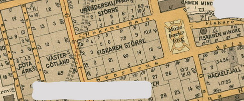 |
Mjölnaren Moses på Katarinaberget På 1600-talet byggde således mjölnaren Johan Hansson Hök två väderkvarnar på Katarinaberget där Mosebacke ligger idag. Den ena kallades för Hökens kvarn (ovan) och den andra för Mosis kvarn. Mosis kvarn fick sitt namn av Höks svärson Moses Israelsson som också var mjölnare. De båda mjölnarnas namn lever kvar på platsen än idag: Hökens gata leder upp från Götgatan till Mosebacke torg.
|
{kind=link}
|
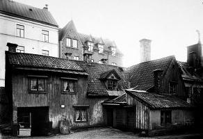 Hökens gata 5, gårdsinteriör. I bakgrunden Hökens gata 6-8
|
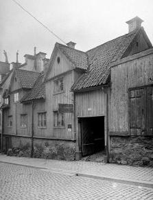 Hökens gata 5, 1904
|
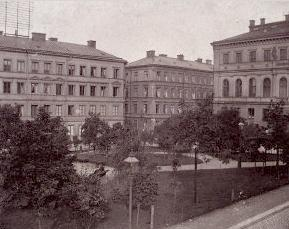 Mosebacke Torg 4 till vänster. Längst bort Hökens gata 11 och Mosebacke Torg 6 (hörnhuset). Till höger Södra Teatern, Hökens gata 13.
|
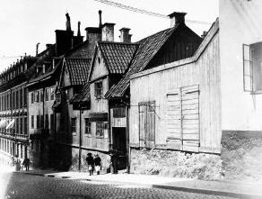 Hökens gata 1-7 i riktning mot Götgatan.
|
|
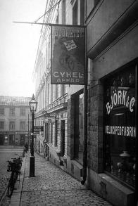 Hökens gata 1-3 i riktning mot Götgatan, 1912-25 |
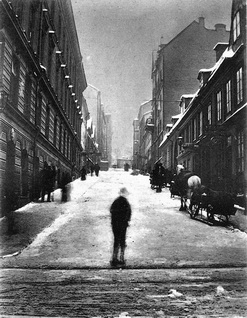 Hökens gata |
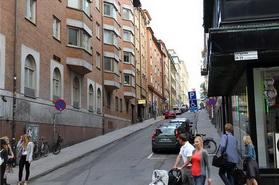 Hökens gata 2018 sedd från Götgatan |
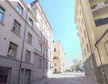 Hökens gata mot Mosebacke 2019 |
{kind=link}
{kind=link}
{kind=link}
|
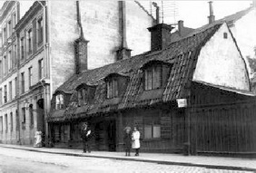 Svartensgatan 26_30. Kv Häckelfjäll
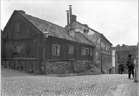 Svartensgatan 27_29. Kv Häckelfjäll. Tv Stora Fiskargränd
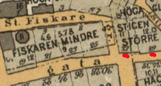
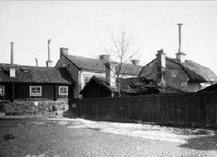 Svartensgatan 27-29_32-34. Stadens vändplan |
Wikipedia Gatans äldsta dokumenterade namn är Fiskaregatan (1646). På Carl Björlings Karta Öfver S:ta Catharina församling år 1674 heter den Svartens eller Fiskaregatan och slutar i höjd med Mosebacke torg. På Petrus Tillaeus Stockholmskarta från 1733 kallas gatan Swartens gr(änd). Från 1840-talet används namnformen Svartens gatan och 1857 fick gatan sitt nuvarande namn. Ursprunget till namnet är inte helt klarlagt men kan möjligtvis komma från den kyrkobetjänt i Katarina kyrka Johan Andersson Schwart som dog 1674. Dagens Fiskargatan går parallellt med Svartensgatan ett kvarter norrut.
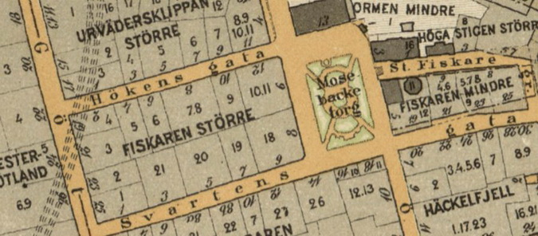
Stahre m fl : Stockholms gatunamn Gatans äldsta kända namn har varit Fiskargatan, belagt 1646. Från 1671 är namnet Svartens Gränd säkert styrkt. På Tillaeus' karta 1733 "Swartens gr[änd]". Namnformen Swartens gatan förekommer från och med 1840-talet. År 1857 fastställs namnformen Swartens gata. Det är uppenbart, att Svarten är ett till namn med bestämd artikel, Svart-Svarten på samma sätt som Hök-Höken. Det torde inte vara möjligt att med någon säkerhet utpeka den man med tillnamnet Svart, som gett anledning till gatunamnet. Wrangel anser det möjligt, att "namnet kommer från Johan Andersson Schwart, som var 'kyrkobetjänt' i Katarina kyrka och afled 1674. Han ägde en gård vid Gamla Tullportsgatan (Östgötagatan), som ju bildade hörn med Svartens gata". Det har funnits ytterligare en Svartens gränd i Katarina. Norr om kvarteret Sandbacken Mindre låg en kvarn, som 1667 omtalas såsom "Swart Hindrichs qwarn". Den finns avritad i Holms tomtbok 1671 med den förklarande texten "Svart Hindriks quarn Inginieuren Holm kiöpt". Samma år omnämns den såsom "Swarttzen Quarn". En nu försvunnen gata inom området bar namnet Svartens gränd och Svart Henriks kvarngränd |
|
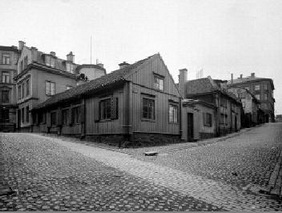 Svartensgatan 38. Katarina kyrkbacke |
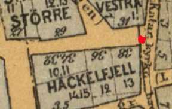 Svartensgatan 38 |
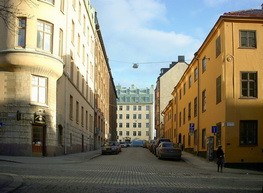 Svartensgatan mot öster från Mosebacke torg |
{kind=link}
|
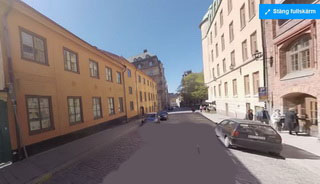 Svartensgatan mot väster.I bakgrunden till höger Mosebacke torg |
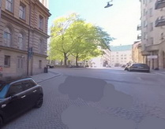 Svartensgatan 11 vid Mosebacke torg österut |
Svartensgatan 38 mot väster |
Svartensgatan mot väster |
{kind=link}
{kind=link}
{kind=link}
{kind=link}
|
Wikipedia Mosebacke torg är ett torg på Södermalm i Stockholms innerstad, beläget på Katarinaberget, i den östra delen av vad som brukar kallas Söders höjder, ett kvarter från Götgatan. Torget och det omkringliggande kvarteret Mosebacke skapades sedan området Mosebacke drabbats av en omfattande brand 1857, då många fastigheter där brann ned till grunden. Delar av det brunna området fick bilda ett nytt torg, Mosebacke torg. Mosebacke (omnämnt som Mosis Backe 1734) har fått sitt namn efter Mosis kvarn som låg på berget på 1600-talet och som ägdes av Johan Hansson Hök. Kvarnen har troligen fått sitt namn efter Höks svärson, Moses Israelsson. Strax intill låg Hökens kvarn, även den ägdes av Johan Hansson Hök, som har fått ge namn åt Hökens gata, en av de backiga gator som förenar torget med Götgatan. På 1850-talet var "Mosebacke" en liten park öster om Hökens gränd. "Mosebacke" är även ett kvartersnamn på Södermalm. I kvarteret ligger Södra Teatern. Nöjescentrum |
|
{kind=link}
{kind=link}
{kind=link}
{kind=link}
{kind=link}
{kind=link}
{kind=link}
{kind=link}
{kind=link}
{kind=link}
{kind=link}
{kind=link}
{kind=link}
|
Under 1950-talet började intresset för revyer minska och samtidigt hade lokalerna blivit alltför slitna och 1958 togs ett rivningsbeslut. Beslutet upprörde många, bland annat Evert Taube som startade en proteströrelse för att rädda Södran. Upprustningen skedde successivt, och inte förrän 1967 kunde Södra Teatern återinvigas. Teaterscenerna i Ingmar Bergmans Oscarsbelönade film Fanny och Alexander 1982 spelades in här. 1984-1985 sattes musikalen Kavallerijungfrun upp på Södra Teatern. Byggnaden har under början av 1900-talet byggts ut genom bredda den med ytterligare två rader på vänstra sidan och en våning extra, från fyra till fem våningar. De tre ingångarna har blivit fem, och fyra statyer ovanför portarna har tagits bort. |